Fez is where Moroccan cuisine reaches its peak. The imperial city has been perfecting tagine for centuries — slow-cooked in conical clay pots over charcoal, with recipes passed down through generations. But finding the good stuff? That's where it gets tricky.
We combed through hundreds of Reddit posts from r/Morocco, r/travel, and r/food to find out which tagine spots actual visitors and Moroccan locals recommend — and which tourist traps to avoid. The best tagine in Fez often costs less than $5.
📊 How we built this list
We analyzed 80+ Reddit posts and 400+ comments across r/Morocco, r/travel, r/food, and r/Fez_Morocco — spanning 2019 to 2025. Restaurants were ranked by recommendation frequency and weighted by commenter credibility (Moroccan locals vs. first-time tourists). We included the street stalls and the fine dining — because the best tagine in Fez doesn't always come with a tablecloth.
💰 40–70 MAD ($4–$7)
📍 Fes el-Bali Medina
🍗 Known for: Chicken tagine
📌 Google Maps →
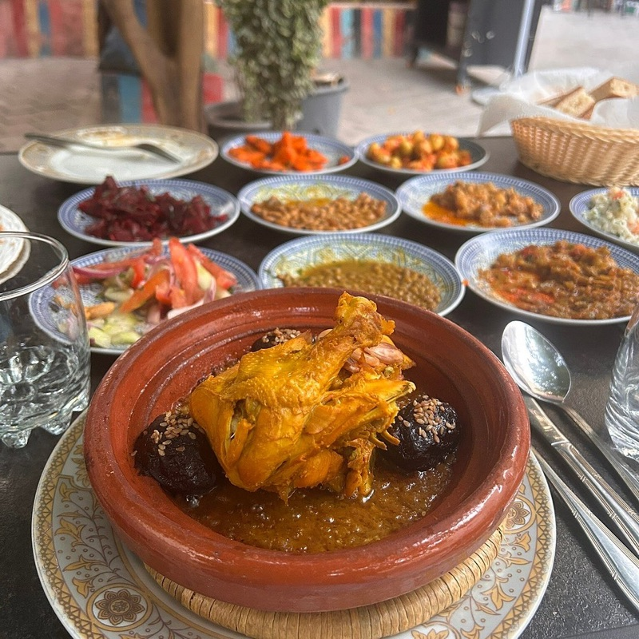
What to order: The chicken tagine is the signature — slow-cooked with preserved lemons and olives in a traditional clay pot. Simple, honest, and exactly what tagine should taste like. No frills, no tourist markup.
"For local I'd recommend Cafe dar L'Harissa (chicken tagine), Restaurant Tiznit (rabbit tagine and R'fissa) and the obligatory visit to Chez Lamine."
— r/Morocco · Food recommendations for Fez thread
tabiji verdict: The local's local pick. When a Moroccan Redditor lists this first for tagine in Fez, pay attention. The chicken tagine here is the kind of slow-cooked perfection that tourist restaurants charge three times more for and still can't replicate. Go for lunch — it's ready by noon and sells out.
💰 80–150 MAD ($8–$15)
📍 Derb Zertana, Fes el-Bali
🌿 Known for: 7-hour lamb tagine
📌 Google Maps →
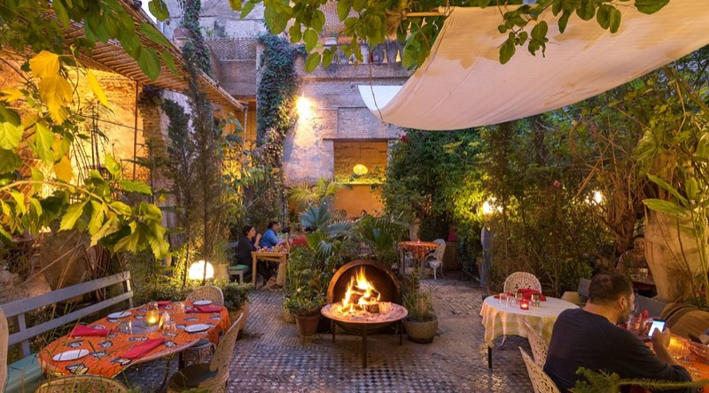
What to order: The lamb tagine — slow-cooked for seven hours, fall-off-the-bone tender. The setting is a restored ruin with crumbling mosaic floors, fountains, and lush foliage. Cats wander between tables. Reservations strongly recommended — space fills up fast.
"The Ruined Garden: as its name suggests, this unique restaurant is nestled within a beautifully restored ruined garden, offering a magical and tranquil setting. Their menu features a mix of traditional Moroccan dishes."
— r/Fez_Morocco · Ultimate Guide to Visiting Fez
tabiji verdict: The most atmospheric tagine experience in Fez. You're eating seven-hour lamb in the literal ruins of a centuries-old riad, surrounded by jasmine and orange trees, with stray cats for company. The tagine is excellent. The setting makes it unforgettable. Book ahead — this isn't a hidden gem anymore.
💰 200–350 MAD ($20–$35)
📍 Fes el-Bali
🍽️ Known for: Set menu, modern Moroccan
📌 Google Maps →
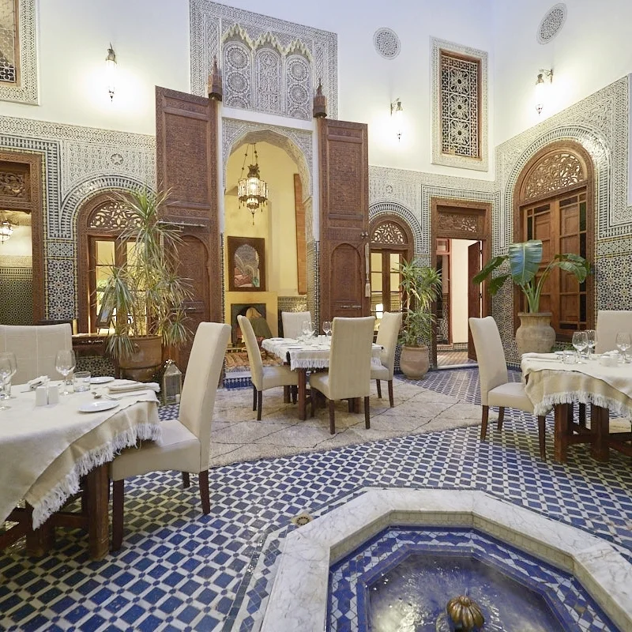
What to order: The set menu is the way to go — it changes seasonally and typically features a refined tagine course alongside other Moroccan classics. The tagine here gets a contemporary twist: same slow-cooking technique, but with more delicate spicing and beautiful presentation. Intimate riad courtyard setting.
"Restaurant Dar Roumana: situated in a beautifully restored riad, Dar Roumana offers a set menu of creative and contemporary Moroccan cuisine. The intimate courtyard setting and attentive service create a charming atmosphere."
— r/Fez_Morocco · Ultimate Guide to Visiting Fez
tabiji verdict: Your one fine dining splurge in Fez. The tagine here isn't the cheapest, but it's the most refined — seasonal ingredients, careful spicing, and a riad courtyard that feels like a private dinner party. Worth it for one special meal after days of 40-dirham medina tagines.
💰 35–65 MAD ($3.50–$6.50)
📍 Fes el-Bali Medina
🐇 Known for: Rabbit tagine, R'fissa
📌 Google Maps →
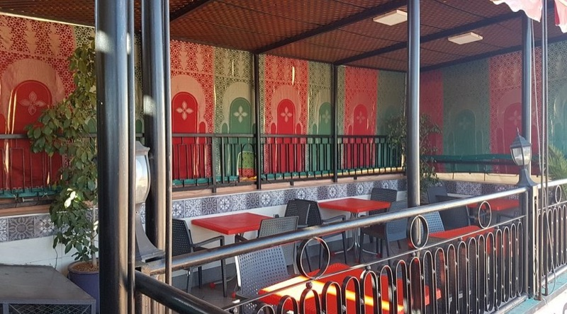
What to order: The rabbit tagine is the standout — an unusual option you won't find at tourist restaurants. Also try the R'fissa, a traditional Fassi dish of shredded msemen bread with lentils and chicken. Both are deeply traditional and rarely offered to tourists.
"For local I'd recommend Cafe dar L'Harissa (chicken tagine), Restaurant Tiznit (rabbit tagine and R'fissa) and the obligatory visit to Chez Lamine."
— r/Morocco · Food recommendations for Fez thread
tabiji verdict: Rabbit tagine. Let that sink in. While every tourist restaurant serves the same chicken-and-olive tagine, Tiznit is cooking rabbit in clay pots for the locals who know better. The R'fissa alone is worth the trip — it's a Fassi specialty that most visitors never discover.
💰 60–120 MAD ($6–$12)
📍 Derb el Magana, Fes el-Bali
🐪 Known for: Camel burger, traditional tagine
📌 Google Maps →
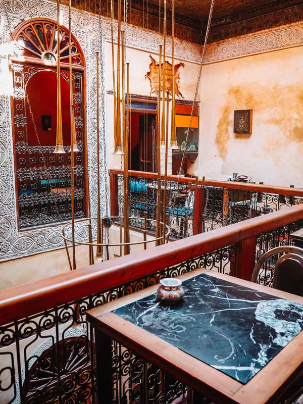
What to order: Everyone talks about the camel burger (and yes, try it), but the traditional tagines here are genuinely good too. The rooftop terrace is one of the best in the medina. Also a cultural hub — live music, storytelling events, cooking classes.
"Great food, nice rooftop, the best dinner in Fez rooftop. We tried the camel burger for the first time, it's something to remember — highly recommend!"
— TripAdvisor review, widely referenced on r/Morocco
tabiji verdict: Part restaurant, part cultural institution. The tagine is solid and the rooftop views are stunning, but what makes Cafe Clock special is the energy — live Gnawa music, cooking classes where you learn to make your own tagine, and a genuine community vibe. Not the most "authentic" tagine on this list, but the most enjoyable overall experience.
💰 100–200 MAD ($10–$20)
📍 Two locations in Fez
👩🍳 Known for: All-women kitchen, classic Fassi tagines
📌 Google Maps →
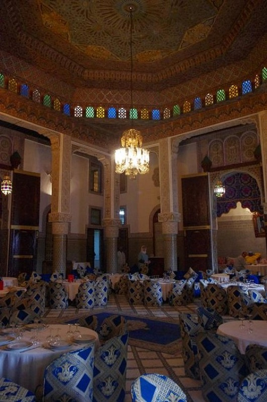
What to order: The lamb tagine with prunes and almonds — Fez's signature dish, executed with precision by an all-women kitchen team. Also try the méchoui (roasted lamb) and any seasonal tagine specials. Two locations: one for families, one for couples/individuals.
"Restaurant Al Fassia: with two locations in Fez (one for families and one for individuals/couples), Al Fassia is renowned for its traditional Fez cuisine prepared by a team of women chefs. Expect flavorful tagines, succulent méchoui, and other local specialties."
— r/Fez_Morocco · Ultimate Guide to Visiting Fez
tabiji verdict: The gold standard for traditional Fassi tagine. The all-women kitchen isn't a gimmick — in Morocco, the best home cooking has always been made by women, and Al Fassia brings that tradition to a restaurant setting. The lamb-prune-almond tagine here is the definitive version.
💰 50–100 MAD ($5–$10)
📍 Fes el-Bali Medina
🏛️ Known for: No-nonsense authentic tagine
📌 Google Maps →
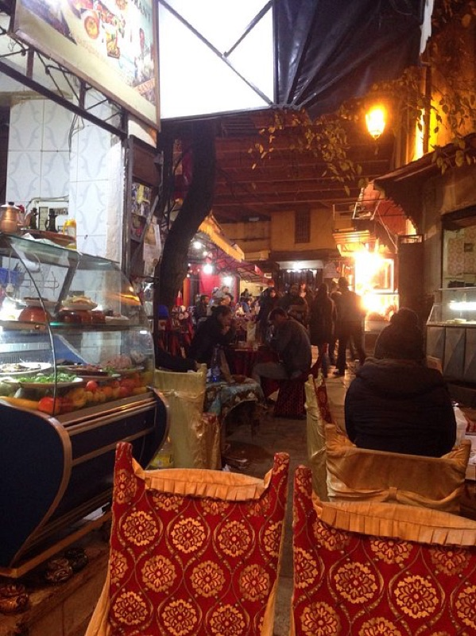
What to order: Whatever's slow-cooking that day. Chez Thami doesn't do frills — it does tagine the way it's been done for generations. The clay pots sit on charcoal, the spices are right, the portions are generous. This is the institutional Fez eating experience.
"Restaurant Chez Thami: a long-standing institution in Fez, Chez Thami is known for its authentic and hearty Moroccan fare. The atmosphere is traditional and unpretentious, and the focus is on delivering delicious and satisfying meals."
— r/Fez_Morocco · Ultimate Guide to Visiting Fez
tabiji verdict: "Long-standing institution" and "unpretentious" — that's exactly what you want from a tagine restaurant. Chez Thami has survived in the medina for years by doing one thing: cooking honest, authentic food at fair prices. No English menu needed — just point at a pot.
💰 250–400 MAD ($25–$40)
📍 Fes el-Bali
⭐ Known for: Modern Moroccan tasting menu
📌 Google Maps →

What to order: The tasting menu is the move — a multi-course journey through modern Moroccan cuisine that typically includes a refined tagine course. The spicing is subtle and complex, the presentation is beautiful, and the rooftop terrace at sunset is spectacular.
"Visiting Fez in a few weeks and while I want to eat local more hole-in-the-wall and traditional foods for most of the trip, I do want one fine dining experience. So which is best: Nur, Roumana, or Palais d'Amandier?"
— u/Imclearlynotfine, r/Morocco · Fine dining in Fez thread
tabiji verdict: If you want tagine elevated to art, Nur is the place. It's the most expensive option on this list, but the tasting menu format means you're getting more than just tagine — it's a full tour of what modern Moroccan cuisine can be. Save this for your last night in Fez.
💰 40–80 MAD ($4–$8)
📍 Bab Boujloud (Blue Gate), Fez
🚪 Known for: Tagine with a view of the Blue Gate
📌 Google Maps →
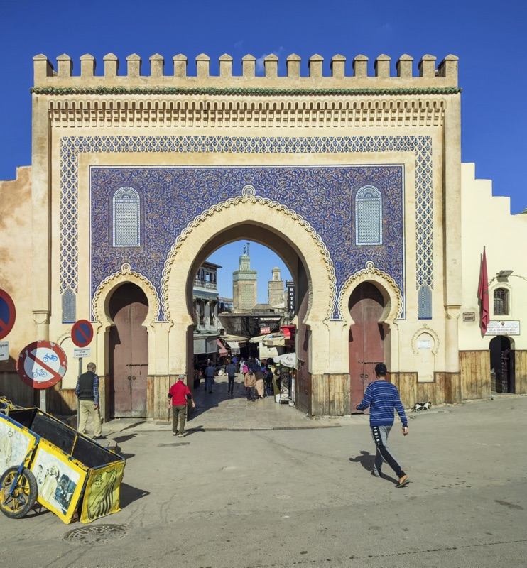
What to order: Any of the classic tagines — chicken, lamb, or kefta (meatball). The food is reliably good and reasonably priced. The real draw is the location: attached to the iconic Bab Boujloud gate, the main entrance to the old medina, with terrace seating overlooking the action.
"'Jawharat Bab Boujloud' in Fez is great. It's attached to the main gate (Bab Boujloud) and the food is tasty for a reasonable price."
— r/Morocco · Restaurant recommendations thread
tabiji verdict: The best tagine-with-a-view deal in Fez. You're eating at the most iconic gate in the city, watching the medina life flow past, and the tagine is genuinely good — not just "good for a tourist spot." Go at sunset when the blue tiles glow.
💰 30–60 MAD ($3–$6)
📍 Fes el-Bali Medina
🐑 Known for: Lamb tagine, tanjia
📌 Google Maps →

What to order: The lamb tagine and tanjia (slow-cooked meat in a clay urn, traditionally buried in the ashes of a hammam furnace). Chez Lamine is the kind of place that's been described as an "obligatory visit" by locals — simple, no-frills, and the tagine speaks for itself.
"For local I'd recommend Cafe dar L'Harissa (chicken tagine), Restaurant Tiznit (rabbit tagine and R'fissa) and the obligatory visit to Chez Lamine."
— r/Morocco · Food recommendations for Fez thread
tabiji verdict: When a local calls a restaurant an "obligatory visit," you go. Chez Lamine is the kind of place you'd walk past without noticing — which is exactly why the tagine is so good. No tourist-facing sign, no English menu, just generations of perfected technique.
💰 200–350 MAD ($20–$35)
📍 Fes el-Bali
🌙 Known for: Terrace dining, refined tagine
📌 Google Maps →
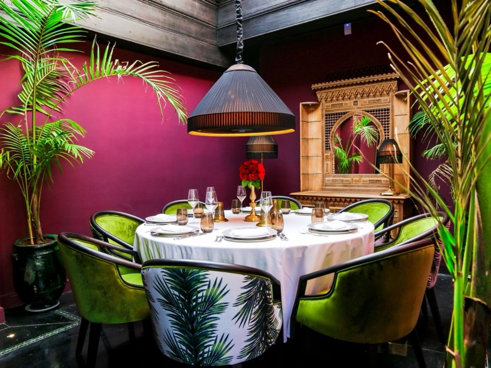
What to order: The beautifully presented traditional dishes with a modern twist — the tagine here uses fresh, local ingredients with more delicate seasoning than street-level spots. The panoramic terrace views of the medina at night are worth the splurge alone.
"Riad Fes — Restaurant L'Ambre: located within the luxurious Riad Fes, this restaurant offers a sophisticated dining experience with panoramic views of the medina from its terrace. Expect beautifully presented traditional dishes with a modern twist."
— r/Fez_Morocco · Ultimate Guide to Visiting Fez
tabiji verdict: The hotel restaurant that's actually worth eating at. The panoramic medina views from the terrace transform a good tagine into a memorable evening. Best at night when the medina lights up below. Dress nicely — this is the most upscale setting on the list.
💰 120–250 MAD ($12–$25)
📍 Fez
🏰 Known for: Grand setting, group-friendly
📌 Google Maps →
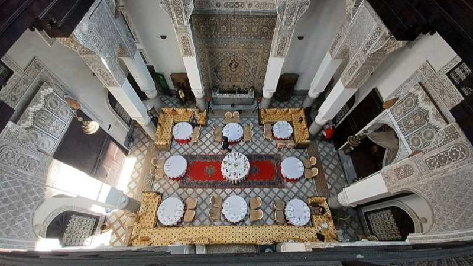
What to order: The set Moroccan meal with tagine as the centerpiece — typically lamb or chicken, served alongside salads, pastilla, and mint tea. The palace setting is dramatic: tiled courtyards, carved plaster, and traditional Moroccan architecture at its most ornate.
"We have been offered Ryad Nejjarine but the reviews of late mentioned that food tastes mass produced and unauthentic and we asked for an alternative and have been offered Palais Al Firdaus."
— r/Morocco · Restaurant in Fez advice thread
tabiji verdict: The palace dining experience without the tourist-trap quality issues. While Ryad Nejjarine catches flak for "mass-produced" food, Al Firdaus maintains better quality. Good for groups or when you want the full Moroccan palace spectacle with your tagine.
💰 25–40 MAD ($2.50–$4)
📍 Throughout Fes el-Bali
🔥 Known for: Clay pots on charcoal, cheapest tagine
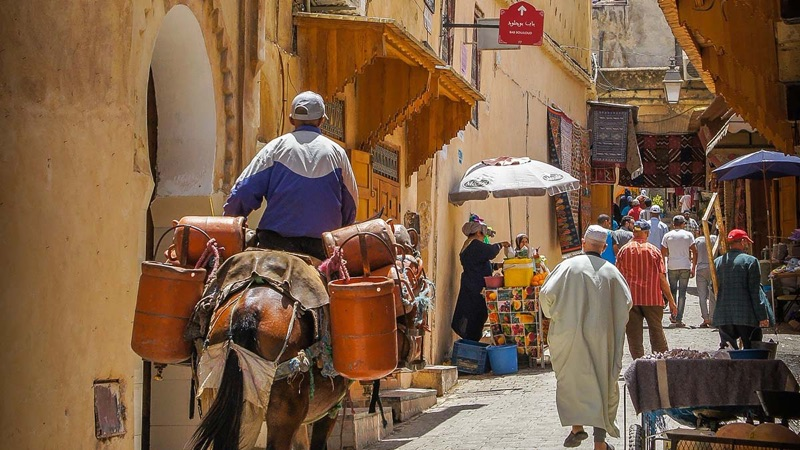
What to order: Whatever's bubbling in the clay pots. The key: look for stalls with tagine pots lined up on charcoal burners outside. These have been slow-cooking since morning and are ready by noon. Chicken with olives, lamb with prunes, kefta with egg — point at whichever looks best.
"Tip for finding good tagines: look for restaurants that have clay tagine pots lined up outside on gas or charcoal burners. These will have been slow-cooked to perfection."
— r/Morocco · Morocco itinerary thread
tabiji verdict: The most authentic tagine in Fez doesn't have a name on Google Maps. It's the guy with ten clay pots on a charcoal grill in a nameless alley. Follow the locals at noon, look for the bubbling pots, sit on a plastic stool, and eat the best $3 meal of your life. This is the real Fez.
💰 120–250 MAD ($12–$25)
📍 Overlooking Fez Medina
🌄 Known for: Best panoramic view of Fez
📌 Google Maps →
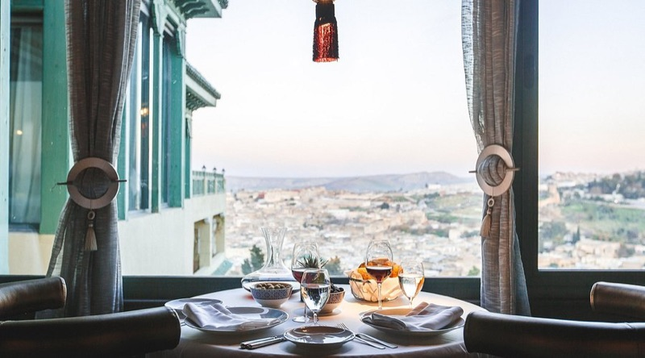
What to order: Lamb tagine with almonds and prunes — Fez's signature, with the addition of what might be the best view in the entire city. The tagine is traditional and well-executed, but the real reason to come is the panoramic terrace overlooking the entire medina.
tabiji verdict: When Redditors are debating between Palais d'Amandier, Nur, and Dar Roumana for their one fine dining meal, that's high company. The tagine is reliable, but you're really paying for the jaw-dropping view. Go for lunch when the medina is bathed in sunlight.
💰 80–150 MAD ($8–$15)
📍 Near Derb Zertana, Fes el-Bali
🌳 Known for: Andalusian garden, refined tagine
📌 Google Maps →
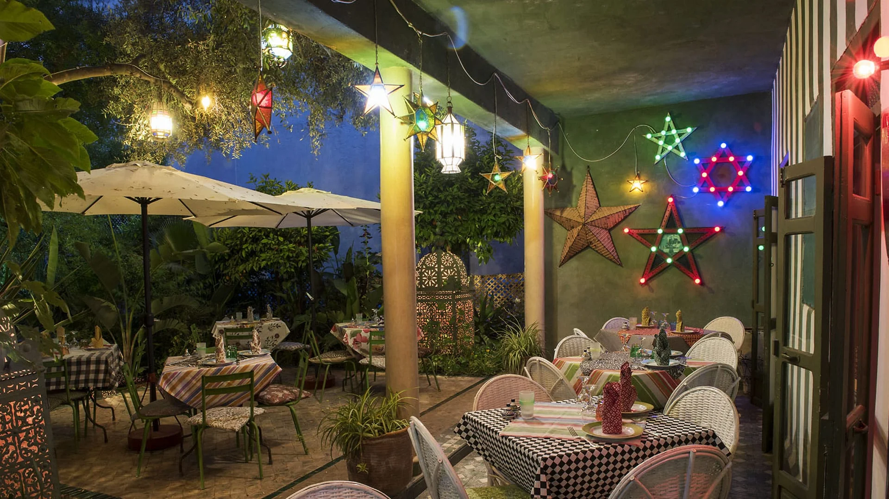
What to order: The tagine of the day, served in a gorgeous Andalusian-style garden. The cooking leans traditional with careful attention to ingredient quality. A peaceful escape from the intensity of the medina — you'll forget you're in one of the world's most chaotic cities.
"You'll find tagine everywhere which can easily be made vegan. Just ask when you go to restaurants. Fez is a fairly large city with lots of options."
— r/travel · Traveling to Fez thread
tabiji verdict: The medina-escape tagine. After hours of navigating the world's largest car-free urban area, Le Jardin des Biehn's garden feels like a parallel universe — birdsong, shade, and a carefully prepared tagine in total peace. Also excellent for vegetarian tagine options if you ask.
Frequently Asked Questions
How much does tagine cost in Fez?
Street stall tagine costs 25–40 MAD ($2.50–$4). Local restaurants charge 40–80 MAD ($4–$8). Mid-range spots run 80–150 MAD ($8–$15). Fine dining tagine at Nur or Dar Roumana costs 150–300 MAD ($15–$30). The cheap tagine is often just as good — Redditors consistently say the best comes from the simplest places.
What is the best type of tagine to try in Fez?
Fez is famous for lamb tagine with prunes and almonds — the city's signature dish. Chicken tagine with preserved lemons and olives is the most common and consistently good option. For something unique, try rabbit tagine at Restaurant Tiznit or the merouzia (slow-cooked lamb with ras el hanout, almonds, and honey).
How do I find authentic tagine in the Fez medina?
Reddit's top tip: look for restaurants with clay tagine pots lined up outside on gas or charcoal burners — these have been slow-cooked to perfection. Avoid restaurants where touts aggressively pull you inside. Follow the locals — if a place is packed with Moroccans at lunchtime, the tagine is good.
Is it safe to eat street food tagine in Fez?
Yes, generally safe. Tagine is cooked at high heat for hours in a sealed clay pot, which kills bacteria. Stick to busy stalls with high turnover. Redditors report that Fez street food is better and safer than Marrakech's, because it's less tourist-oriented and vendors rely on local repeat customers.
When is the best time to eat tagine in Fez?
Lunch (12:00–2:00 PM) is prime tagine time. Most traditional places slow-cook through the morning and sell out by early afternoon. For dinner, upscale restaurants like Dar Roumana and Nur cook to order. Friday is special — many families eat couscous, so some spots may have limited tagine menus.